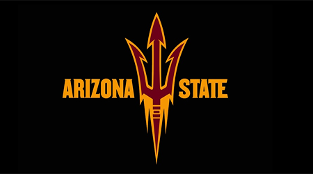

Cam Skattebo for Heisman
This website advocates for Cam Skattebo and why he should have won the heisman trophy this year


Here are a couple of videos of Cam Skattebo's highlights from this season:
As you see from his highlights, Cam Skattebo is an incredible running back.
Listed here are different reasons he is qualified for and why he should have won the heisman trophy:
- Team Success
- He lead Arizona State team to an impressive 11-2 record
- Arizona State had a record of 3-9 the previous year, which means they had an 8 win improvement this year
- Arizona State won the Big 12 championship, and Skattebo had 208 yards and 3 touchdowns in the championship game
- Arizona State made the College Football Playoff as the number 4 seed, receiving a first round bye
- Awards won
- Cam Skattebo won Big 12 offensive player of the week 5 times this year
- This is more than any other power 4 conference player in the country won player of the week in their conference
- Cam Skattebo was named the AP player of the week twice
- Cam Skattebo made the first team all Big 12
- Cam Skattebo was named an AP first team All American
- Season Stats
- 2074 scrimmage yards (2nd in FBS)
- 1568 rushing yards (5th in FBS)
- 506 receiving yards
- 22 total touchdowns
Below is a graph of America's favorite teams based on followers on Twitter. With a player like Cam Skattebo, Arizona State should gain a lot of fans quickly.
As you can clearly see, Cam Skattebo is an amazing football player and deserved the Hesiman trophy. He had an incredible season, filled with impressive stats, amazing highlights, and had a profound impact on his team and their success.
Click here to go back to the top